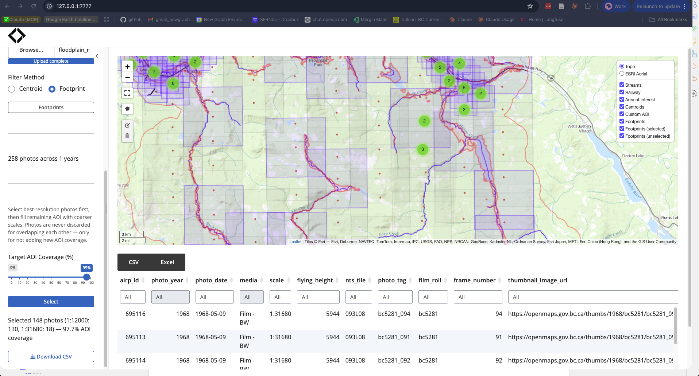

Delineation-Informed Geographic Ground Selection — an interactive Shiny app for selecting historic orthophoto imagery from the BC Data Catalogue.
Historic airphotos are ground truth for understanding what floodplains looked like before roads, railways, agriculture, and forestry reshaped them. Was that rangeland always rangeland — or was it an old growth cottonwood forest-wetland complex? diggs helps you find the photos to answer that question.
Filter by year, media type, and scale. Draw or upload an AOI. View estimated photo footprints. Run resolution-prioritized selection to get the best coverage with the fewest photos. Export to CSV and order from the BC Air Photo Warehouse.

Install
# install.packages("pak")
pak::pak("NewGraphEnvironment/diggs")Quick Start
# 1. Cache data layers for your watershed (one-time, ~5 min)
# Edit data-raw/cache_data.R to set blk/drm for your watershed
source(system.file("data-raw/cache_data.R", package = "diggs"))
# 2. Launch
diggs::run_app()Configure Your Watershed
Open data-raw/cache_data.R and change three parameters:
blk <- 360873822 # blue_line_key — unique stream ID
drm <- 166030.4 # downstream_route_measure — how far upstream (metres)
buf <- 1500 # buffer around watershed (metres)Find blk and drm for your stream on the FWA Stream Network map — click a stream and read the popup.
Custom AOI
Within the configured watershed, switch to Custom mode to refine your area of interest:
- Draw a polygon directly on the map
- Upload a GeoJSON or GeoPackage (e.g. a floodplain polygon from QGIS)
The custom AOI must fall inside the watershed configured at startup — photo centroids are only cached for that region. To work in a different watershed, update blk/drm in cache_data.R and re-run.
How It Works
- Filter — narrow by year range, media type (B&W, colour, infrared), and scale
- Explore — clustered centroids on the map with popups showing photo metadata
- Footprints — estimate photo coverage rectangles from scale and focal length
- Select — resolution-prioritized greedy set-cover: picks all photos at the finest scale first, then backfills remaining AOI gaps with coarser scales
- Export — download selection as CSV for ordering
Selection uses fly under the hood for spatial photo operations (footprint estimation, filtering, coverage-based selection).
Part of the Ecosystem
diggs is one piece of a larger floodplain analysis workflow:
| Package | Role |
|---|---|
| flooded | Delineate floodplain extents from DEMs and stream networks |
| diggs | Select historic airphotos covering those floodplains |
| drift | Track land cover change within floodplains over time (satellite imagery) |
| fly | Spatial operations on airphoto centroids (used by diggs internally) |
Together: delineate the floodplain (flooded), find what it looked like historically (diggs + ordered airphotos), and measure what changed since (drift). The combination answers questions like: where were the wetlands before this became pasture? Where did cottonwood galleries disappear? What was the riparian condition when salmon populations were healthy?